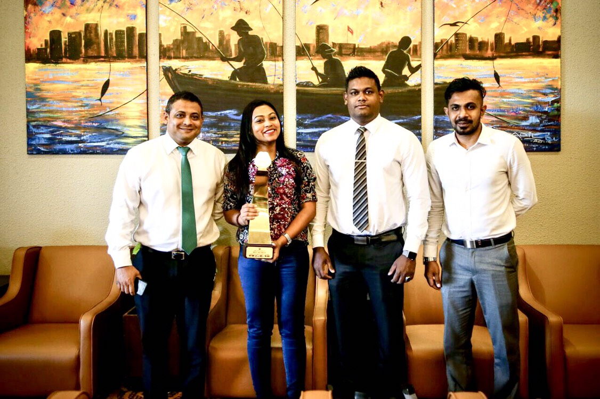

Congratulation Rishmy on winning best actress award at SAARC film festival 2017

Aishath Rishmy has won the award for Best Actress at the South Asian Association for Regional Corporation (SAARC) Film Festival 2017.She won the award for her acting in the Film ‘Vishka’, which she had produced as well.
NCA was established on 29th December 2005. NCA is dedicated to the mission of encouraging and supporting the arts in Maldives by providing financial support, services, and other programs for a variety of arts organizations or individual artists and the community as a whole.
There are only a small amount of actors and actresses, which could be a factor that the industry is unable to successfully gain much improvement to the industry over the recent years even with much hard work and dedication. It needs a lot of development and new quality actors to make the work and story of good quality for a bigger worldwide audience. The film industry of Maldives requires many upcoming artists to make the industry come up to the limelight of the world film industry. The magnificent locations and beaches could make it easier for the crews to get a perfect background for a great movie.